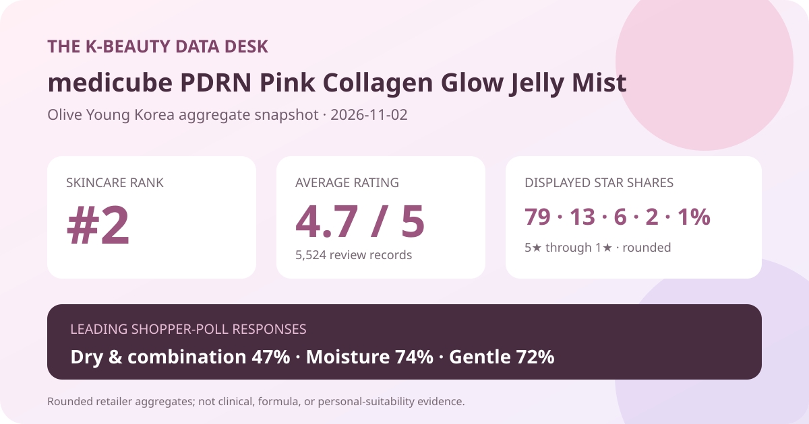
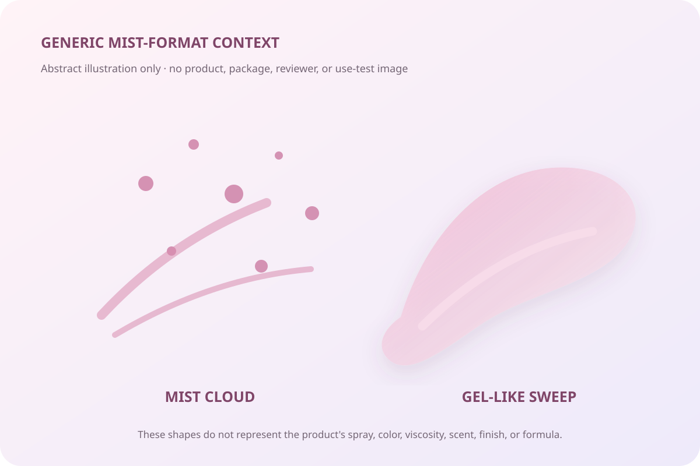

Data captured November 2, 2026. This analysis uses only the retailer's displayed product title, ranking position, aggregate rating, star distribution, and shopper polls. It does not copy or translate individual review text, reviewer names, or photos, and it makes no claim of firsthand use.

The short version: medicube PDRN Pink Collagen Glow Jelly Mist appeared at number 2 in the captured skincare sales ranking. Its product header and detailed review view agreed on 4.7 out of 5 from 5,524 records. Dry and combination respondents were tied in the skin-type poll, moisture led the concern panel, and 72% selected the gentle response. These are listing-level retail signals, not proof of hydration, collagen change, glow, tolerance, or clinical performance.
The displayed average was 4.7 stars. Olive Young showed 5,524 review records in the product header, and the official detailed review view repeated both the 4.7 score and the 5,524-record total. That internal agreement makes it less likely that the rating was accidentally taken from a different listing or an outdated rank card.
The detailed review view displayed these rounded star shares:
The rows total 101% because the retailer displays whole-number percentages. Five-star selections clearly dominate, while 21 displayed percentage points fall below five stars before accounting for the rounding overflow. The useful interpretation is a strongly positive but not unanimous retail record. It is not a 79% effectiveness rate or a guarantee that four out of five future buyers will have the same experience.
The average and star shares compress different routines, climates, application amounts, sensitivities, purchase dates, and package configurations. The source does not establish that every record came from a verified buyer or that every reviewer used the same formula under the same conditions. A large record base can make the sentiment pattern more stable without turning it into causal evidence.
The skin-type poll displayed 47% dry, 47% combination, and 6% oily. The tie is more informative than trying to force a single “best” skin type: dry and combination respondents were represented at the same leading share in the captured panel.
Representation is not fit. The percentages do not reveal the panel denominator, whether every review answered the question, or how respondents defined their own skin type. They also do not show sensitivity history, weather, routine steps, application frequency, or how much product was sprayed. The 6% oily share means fewer displayed responses carried that label; it does not prove that oily skin should avoid the mist.
The concern panel showed 74% moisture, 19% soothing, and 7% wrinkle or brightening. These shares total 100% as displayed. Moisture was the dominant shopper-selected label, which is useful for understanding how the review pool categorized the product. It does not establish a measured change in skin water content or barrier function.
No corneometer reading, transepidermal-water-loss measurement, comparator, defined application protocol, or time point was captured. The 19% soothing response likewise cannot prove redness reduction or treatment of irritation. The 7% wrinkle or brightening response is a small poll share, not proof for or against those outcomes.
The irritation panel displayed 72% gentle, 26% ordinary, and 2% felt irritation. Most captured respondents selected the favorable label, but more than one quarter chose ordinary and a nonzero group selected felt irritation. Those labels are useful as a broad retail snapshot, not as a safety test.
The source does not provide a patch-test protocol, dermatologist assessment, allergy screening, or the number of people who answered this panel. It also cannot establish the cause, severity, or duration behind any response. Anyone with a known allergy, damaged barrier, active skin condition, or a history of reactions should check the current regional ingredient list and follow appropriate professional guidance rather than relying on the average.

The retailer title identifies the product as a jelly mist. That wording is enough to classify the listing format, but it is not enough to reconstruct viscosity, droplet size, spray pattern, scent, tack, absorption, finish, or compatibility with makeup. I did not handle or spray the product.
The local illustration above is deliberately generic. It visualizes the idea of a mist cloud paired with a gel-like sweep without depicting the product, package, formula, or real output. Actual spray behavior depends on the pump, distance, angle, number of presses, amount left in the container, and whether the nozzle is clean. How a mist sits over sunscreen or makeup also depends on the rest of the routine.
“PDRN” and “collagen” appear in the retailer's product title. This article treats them only as listing identifiers. The captured aggregate data does not establish the source, grade, concentration, delivery, stability, or biological effect of any named material, and it does not show a complete independently verified ingredient list.
A high retail rating cannot demonstrate collagen production, skin regeneration, wound healing, or treatment of a medical condition. Likewise, a wrinkle or brightening poll response is not a clinical endpoint. Buyers who care about formula specifics should inspect the current package and regional ingredient disclosure rather than infer amounts or effects from the title.
The captured title described a 100 ml double plan with a large makeup puff. The page displayed a ₩47,800 reference price and a ₩28,410 promotional total on the capture date. Those details identify the offer observed during this snapshot; they are not permanent value claims.
Review pools can follow a product across single units, double packs, gifts, package redesigns, or other related configurations. The interface indicated that related configurations may share review history. Before buying, verify the selected option, unit count, total volume, gift inclusion, current formula, stock, delivery method, coupon eligibility, return terms, and final checkout price.
This medicube mist was the first valid unpublished candidate after the higher-ranked AESTURA cream family was skipped as already covered. It held skincare sales rank 2, and the ranking and detail titles agreed. Both the product header and detailed review view displayed 4.7 stars from 5,524 records.
The visible distribution was favorable: 79% five-star and 13% four-star, with smaller three-, two-, and one-star shares. Dry and combination respondents tied at 47%, moisture led the concern poll at 74%, and 72% selected the gentle response. Together, those numbers describe a substantial, mostly positive retail record with meaningful non-five-star feedback still present.
The responsible next step is verification, not extrapolation. Check the exact current option and formula, treat the PDRN and collagen wording as product-title language rather than proof, and test personal compatibility cautiously. The data can help frame those checks; it cannot make the decision for an individual routine.
Method note: Numbers are transcribed from Olive Young Korea's live aggregate display and official detailed review view on the capture date. Percentages are reported as displayed and are not converted into estimated reviewer counts. Individual review text, reviewer names, product photographs, and reviewer photographs were not copied, translated, paraphrased, or reproduced. This is editorial analysis, not medical advice or a claim of firsthand use.
Source: Olive Young Korea product page (captured November 2, 2026). Store links contain no affiliate ID.
← All reviews · Review-volume rankings · Skin-type poll index · Methodology